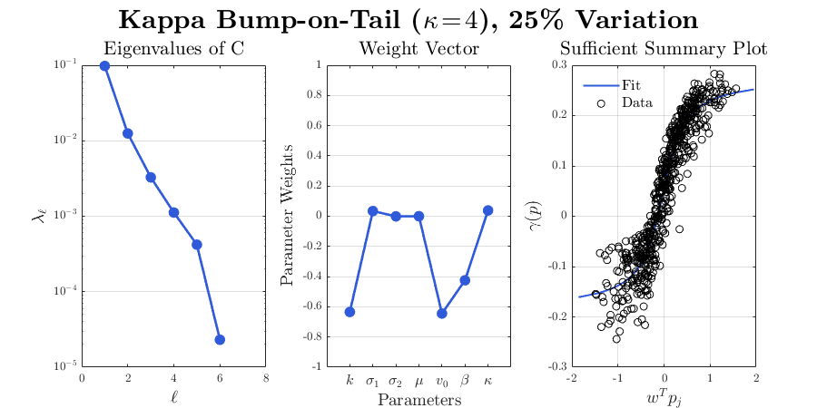

Contents
Plot output variables
[fitted_curve1,gof1] = fit(Xs*w,growth,'poly2');
p1 = coeffvalues(fitted_curve1);
poly2error = [gof1.sse; gof1.rmse; gof1.rsquare; gof1.adjrsquare];
x0 = [1 1 1 1];
fitfun = fittype( @(a,b,c,d,x) d*atan(b*(x+a))+c );
[fitted_curve2,gof2] = fit(Xs*w,growth,fitfun,'StartPoint',x0);
p2 = coeffvalues(fitted_curve2);
atanerror = [gof2.sse; gof2.rmse; gof2.rsquare; gof2.adjrsquare];
error = table(poly2error,atanerror,'VariableNames',["Poly2 Error","Arctan Error"],'RowNames',["sse","rmse","rsquare","adjrsquare"])
if error.("Poly2 Error")(1)<error.("Arctan Error")(1)
p = p1;
fitcurve = fitted_curve1;
deg = 2;
elseif error.("Poly2 Error")(1)>=error.("Arctan Error")(1)
p = p2;
fitcurve = fitted_curve2;
deg = 4;
end
gw = 1.25;
minx = min(Xs*w);
maxx = max(Xs*w);
gridx = [gw*minx; Xs*w; gw*maxx];
A = [gridx, fitcurve(gridx)];
[temp, order] = sort(A(:,1));
A = A(order,:);
for i=1:length(evalues)
if evalues(i)<10^(-16); evalues(i)=0; end
end
error =
4×2 table
Poly2 Error Arctan Error
___________ ____________
sse 1.7069 0.97796
rmse 0.053472 0.040508
rsquare 0.83731 0.90679
adjrsquare 0.83677 0.90632
Subplots of Eigenvalues, Weight vector, and SSP with appx
close all
fig6 = figure('Position', [100, 100, 900, 450]);
if kappa ==2; color = '#dc143c'; else; color = '#2f5ada'; end
set(groot,'defaultAxesTickLabelInterpreter','latex');
set(groot,'defaulttextinterpreter','latex');
set(groot,'defaultLegendInterpreter','latex');
pos = [0.1 0.1 0.225 0.74];
subplot('Position',pos), semilogy(1:Nparams,evalues,'.-','Color',color,'MarkerSize',30,'linewidth',2)
ax = gca; ax.FontSize = 10;
xlim([0,Nparams+1]);
set(gca, 'YGrid', 'on', 'XGrid', 'off', 'YMinorGrid', 'off');
title('Eigenvalues of C','Fontsize',16);
xlabel('$\ell$','Fontsize',14)
ylabel('$\lambda_\ell$','Fontsize',14)
pos = [0.4 0.1 0.225 0.74];
subplot('Position',pos), plot(1:Nparams,w,'.-','Color',color,'MarkerSize',30,'linewidth',2)
ax = gca; ax.FontSize = 10;
xaxisproperties=get(gca, 'XAxis');
xaxisproperties.TickLabelInterpreter = 'latex';
xaxisproperties.FontSize = 12;
xlim([0,Nparams+1]); ylim([-1,1]);
set(gca, 'YGrid', 'on', 'XGrid', 'off', 'YMinorGrid', 'off');
title('Weight Vector','Fontsize',16);
xlabel('Parameters','Fontsize',14)
ylabel('Parameter Weights','Fontsize',14)
xticks(1:Nparams)
set(gca,'XTickLabel',{'$k$' '$\sigma_1$' '$\sigma_2$' '$\mu$' '$v_0$' '$\beta$' '$\kappa$'})
pos = [0.7 0.1 0.225 0.74];
subplot('Position',pos);
plot(A(:,1), A(:,2), 'Color',color,'linewidth',1.5); hold on
plot(Xs*w,growth,'ko');
ax = gca; ax.FontSize = 10;
title('Sufficient Summary Plot','Fontsize',16);
xlabel('$w^T p_j$','FontSize',14);
ylabel('$\gamma(p)$','FontSize',14);
legend('Fit','Data','FontSize',12,'Location','NorthWest','Box','off');
maxgrowth = max(growth); mingrowth = min(growth);
grid on;
txt = ['\textbf{Kappa Bump-on-Tail ($\kappa\!=\!',int2str(kappa),'$), ',int2str(var*100),'\% Variation}'];
sgtitle(txt,'FontWeight','bold','Interpreter','latex','FontSize',22);
set(gcf, 'PaperPosition', [0 0 9 6]);
set(gcf, 'PaperSize', [9 6]);
saveas(gcf, ['Figs/EigWVSSPfit_Dispersion_KapBoT' int2str(kappa) '_' int2str(Nparams) '_' int2str(N) '_' int2str(100*var) '_' int2str(deg) '.pdf'])
saveas(gcf, ['Figs/EigWVSSPfit_Dispersion_KapBoT' int2str(kappa) '_' int2str(Nparams) '_' int2str(N) '_' int2str(100*var) '_' int2str(deg) '.fig'])
